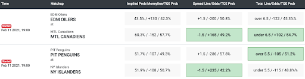
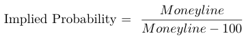
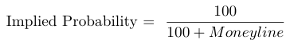
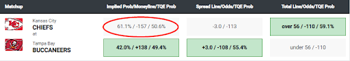
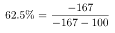
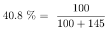
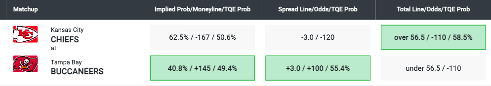
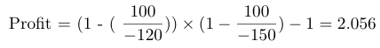

Point Spread
Point Spread is the number of points by which the winner is expected to win or the loser is expected to lose. There are two ways you can win a bet on the point Spread. On the one hand, if you bet on the favorite, you can win the bet if the favorite wins the game by points that are more than the point Spread. On the other hand, if you bet on the underdog, you can win the bet if the underdog wins the game or loses the game by points that are fewer than the point Spread. A minus sign (-) means this team is the favorite and a plus sign (+) means this team is the underdog.
For example, let’s say that in a game between the Kansas City Chiefs and Tampa Bay Buccaneers, the Spread is 3.0. If you bet on the Chiefs (-3) and want to win the bet, the Chiefs need to win by more than 3 points. If the Chiefs win by exactly 3 points, it results in a push, in which you neither win nor lose and are fully refunded. If you bet on the Buccaneers (+3) and want to win the bet, the Buccaneers need to win or lose by less than 3 points. If the Buccaneers lose by exactly 3 points, it results in a push, in which you neither win nor lose and are fully refunded.
In the Chiefs vs Buccaneers game, The Quant Edge (TQE) suggests you bet on the Buccaneers using the Spread since their proprietary analytics says there is a 55.4% chance the Buccaneers lose by less than 3 points (+3).

Odds
Before we introduce the types of bets, it is important to clarify an important criterion behind each bet: odds. Odds can be used to represent how likely a result will happen and the potential payout of a wager.
Standard odds have a base odds of 100 and fluctuate around the base odds. Standard odds are generally used when the Spread is set at a level or number so the chances of each side winning are 50/50. The standard odds, when including the “vig” or “juice”, for games are generally -110, which means you have to risk (can lose) $110 to win $100 on any bet. However, the odds can fluctuate (-120 or +100/Even) depending on how much money has been bet on either side of a wager. The odds indicate the money you need to risk or can win based on risking $100. For bets on sports like football and basketball, the Spreads are generally set so either team has an equal chance to cover the Spread so the odds are -110 on either team bets. For example, Chiefs winning at -$110 means that you need to risk $110 to win $100 if the Chiefs cover the Spread.
However, for sports like hockey, soccer, and baseball where the total points scored are much lower the odds to cover Spread fluctuate to a much greater degree. For these sports, odds for the moneyline or Spreads (that is generally set at -1.5 or +1.5) vary to a much greater degree. The difference expressed in their difference in odds. In the example below the odds are +165 at -1.5 for the Canadians and -286 at +1.5 for the Penguins. So, if you bet $100 on the Canadians at -1.5 goals and they win by more than 1.5 goals you will win $165 and if you bet $100 on the Canadians at +1.5 goals and they lose by more than 1.5 goals you will lose $286. The moneyline, who will win the game, also varies to a greater degree. In the example below the Oilers are +130 and the Canadians are -152 in their game against each other.
Moneyline
Moneyline is the simplest type of bet. You win the bet if you successfully pick the winner of the game. If you are betting on a favorite (negative Moneyline), the Moneyline indicates the money you need to risk to get $100. If you are betting o n an underdog (positive Moneyline), the odds indicate the money you will get from every $100 you risk.
From the Moneyline, you are able to calculate the implied probability of either team winning the game. There is a convenient formula to calculate for the favorite:
There is also a conventional formula to calculate for the underdog:
Taking the Chiefs vs Buccaneers as an example, the implied probability of the Chiefs winning, based on the +/-167 odds, can be calculated as follows:

The implied probability of the Buccaneers winning, based on the +145 odds, can be calculated as follows:
The probabilities added together will not equal 100% because the bets always factor in some extra percentage as an implied profit for the house or entities that accept the bet.
In the Chiefs vs Buccaneers example, The Quant Edge suggests you bet on the Buccaneers using the Moneyline because our proprietary analytics say the Buccaneers have a 49.4% chance of winning the game and that is 8.6% higher than the implied probability based on the betting odds or money line offered.
TOTALS (OVER/UNDER)
Totals is a bet on the combined total points two teams score in a game, regardless of which team wins the game. If you bet the Over, you win the bet if the total points combined are Over the established betting number. If you bet the Under, you win the bet if the total points combined are Under the established betting number.
Using the Chiefs vs Buccaneers as an example the teams’ total combined points would have to be over or under 56.5 points to win the bet. Using this game (Super Bowl LV) as an example, the final score was Buccaneers 31 and Chiefs 9 for a total of 40 points, a bettor would have lost the Over (over 56.5) and won the Under (under 56.5).
Terminologies
Juice: Also known as the “vig”. Juice is what a sportsbook will charge for taking a bet. The most standard juice is 10%. In this case, the odds will be -110. It means that the sportsbook will get $10 on any losing bets. Winning bets will get paid $100 and on all losing bets, the bettor will have to pay $110 (-110).
Units: refers to the amount of money you bet in a single game.
Parlay: refers to a wager type in which multiple types of bets are linked together. The payout is greater, but you have to win every single bet within this parley to get the final payout. The potential payout can be calculated by multiplying the decimal odds of every bet within.
For example, if you want to bet a parlay on both the Chiefs -120 and Cowboys -150 to both win and you want to risk $100 your potential profit will be roughly $200:
Although profits of different parlays have different final values based on the odds of each game the payouts for parlays on games with standard odds at -110 are fixed because sportsbooks are choosing teams that have the same odds, based on the 50/50 propositions. Therefore, in most Las Vegas sportsbooks, the typical payouts of parlays are listed below:
| Numbers | Odds | Risk | Payout |
|---|---|---|---|
| 2 Team Parlay | 2.6 to 1 | $100 | $360 ($100 risked +$260 profit) |
| 3 Team Parlay | 6 to 1 | $100 | $700 ($100 risked +$600 profit) |
| 4 Team Parlay | 11 to 1 | $100 | $1,200 ($100 risked +$1,100 profit) |
| 5 Team Parlay | 22 to 1 | $100 | $2,300 ($100 risked +$2,200 profit) |
| 6 Team Parlay | 45 to 1 | $100 | $4,600 ($100 risked +$4,500 profit) |
Buying points: An option in which a bettor can improve the Spread of his/her bet for a more expensive price. For example, the original Spread between Chiefs v. Buccaneers is 3.0, but you can take Chiefs - 2.5 or Buccaneers +3.5 with a higher price. So, instead of your odds being -110 you will have to risk, potentially lose, a greater amount to “buy” the Spread down to -2.5 or +3.5. The additional risk (i.e. -120 or -130) will be clearly shown in the drop down you use to buy the points
Middling: A middle is a betting strategy in which a bettor places wagers on both sides of the same bet at different lines, attempting to win both. This can happen if the line moves at any point before the game begins or if a bettor takes a different side at some point during the game (generally at halftime or the end of a quarter) when the odds have changed based on the current/updated score. This is often done to potentially ensure that at least one of the bets will win and hoping the score comes in between the two bets and both bets win.